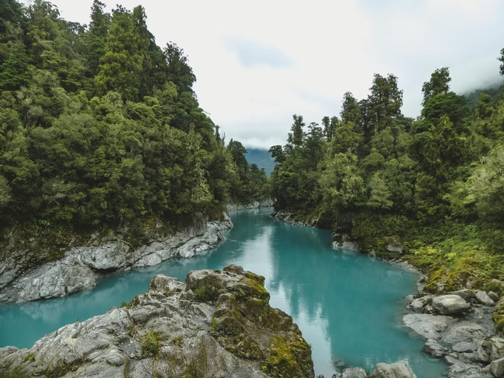
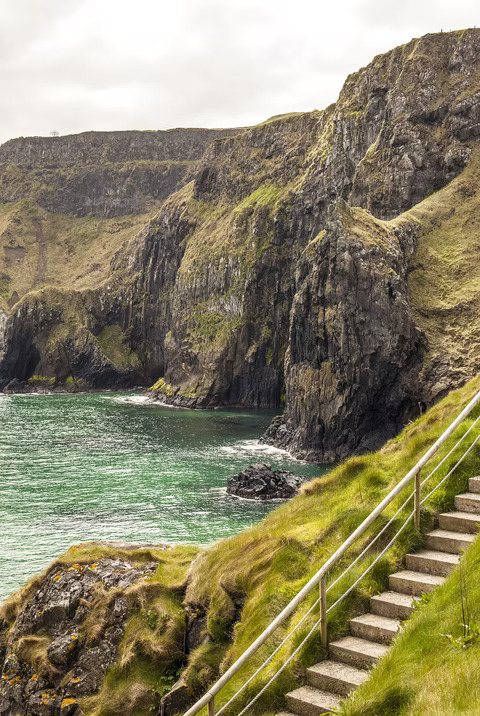

Mobility


My
plans
For my mobility, I have two drastically different ideas. Thousands of kilometers away from each other.
The first one is New Zealand.
It's a country I always wanted to discover, with those mystical mountains and spectacular viewpoints. Being a hiking enthusiast, I would really love to sightsee it myself.
From a cultural perspective, I would love to discover a new culture that might be similar to European culture but only has traces of its influence. Furthermore, it's a country deeply connected to rugby, a sport I played for many years and whose values I've retained.
The second one is Ireland.
Ireland's culture and environment has always fascinated me. I've had an ongoing connection with Anglo-Saxon culture for a long time, and I really appreciate its way of life. I like Ireland's breathtaking scenery, particularly the hiking trails, green hills, and cliffs that add romance to every sight. It's a location where I'd want to study and develop because of its blend of vibrant, modern culture and historic cities, which would suit me best.
I also had a discussion with a student during the International Day; this thoughtful conversation really comforted me about my wish to go to Ireland.